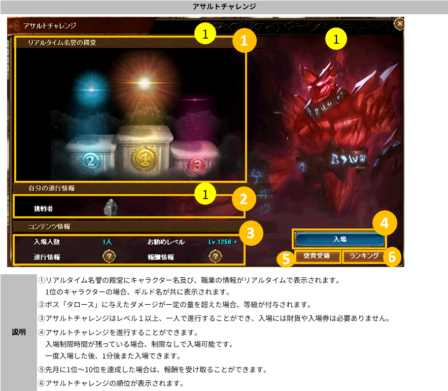
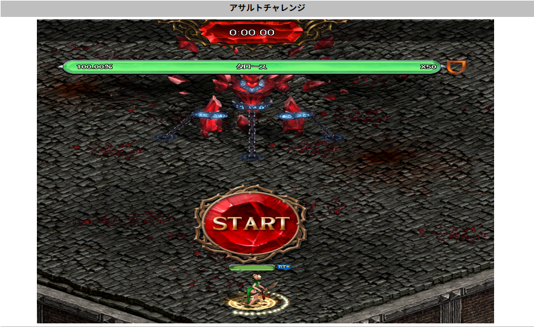
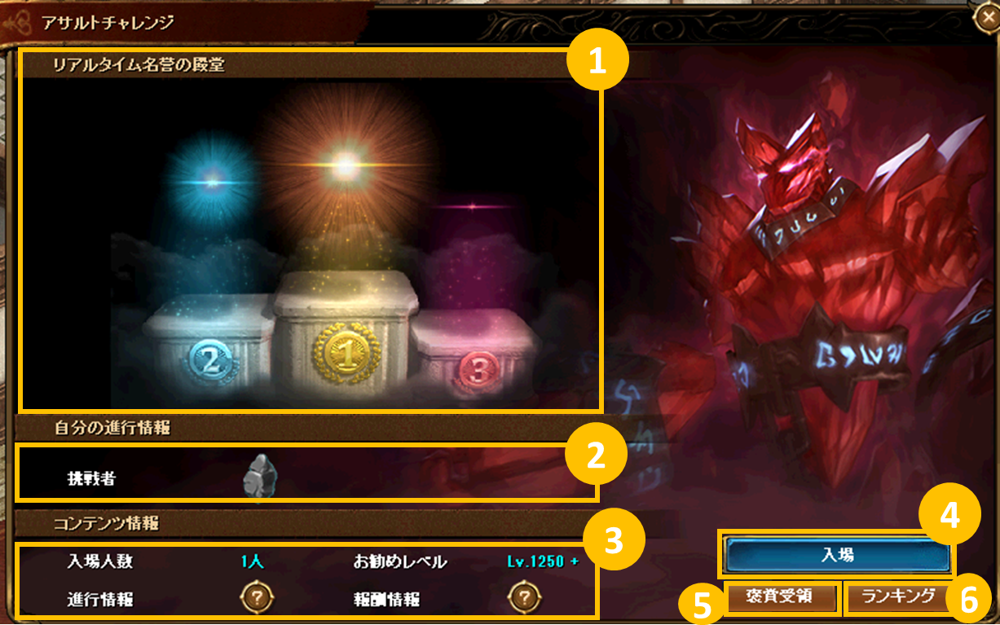
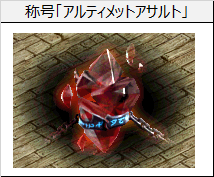
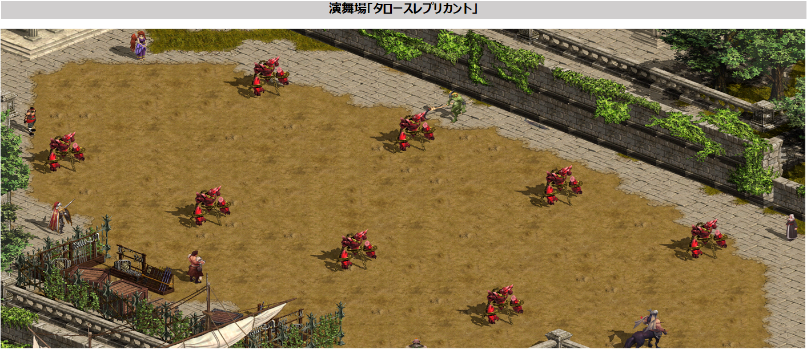

メニュー
トップ >>
ダンジョン >>
栄誉の祭典
現在はメインコンテンツとして アサルトチャレンジ (タロース討伐ランキング) と、攻撃力測定用の練習ダミー タロースレプリカント が配置されています。
2025年10月16日 (ver 0.0865) アサルトチャレンジ実装 ／ 2026年4月23日 (ver 0.0876) 「栄誉の祭典」フィールド追加・進行位置移動
栄誉の祭典への入場方法
アサルトチャレンジ — 入場とUI
アサルトチャレンジ — ダンジョン進行
リアルタイム名誉の殿堂
ランキング (月間精算)
達成等級と報酬
タロースレプリカント (演舞場の練習ダミー)
注意事項

新規フィールド「栄誉の祭典」全体図
■ 入場経路 (2通り)
① NPC会話で入場
② Guide機能で入場
・ミニマップ下の 「Guide」 → コンテンツ枠の 「栄誉の祭典」 をクリックでフィールド内に移動。
・「アサルトチャレンジ」 から飛んだ場合は栄誉の祭典内のセレネ付近に直接降ります。
※ 2026年4月23日 (ver 0.0876) より、アサルトチャレンジの入口がここに移動しました。
以前は「冒険家協会バー」のセレネ (99, 51) が入口でしたが、現在は栄誉の祭典内に移ったセレネがアサルトチャレンジの入口を兼ねています。
毎月集計され、上位者には称号と飾り報酬が支給されます。入場券・財貨は不要で何度でも挑戦可能。
※ アサルトチャレンジは レベル1以上 から入場可能。1251レベル帯～「Guide」のコンテンツ枠にも表示されます。
■ アサルトチャレンジのメインUI
セレネに話しかけると開くUI。挑戦・褒賞受領・順位確認ができます。
ダンジョン入場後、START ボタンをクリックして開始
1位のキャラクターは ギルド名 も併せて表示されます。
該当等級を 最初に達成した場合、飾りの報酬が支給されます。
■ 月間ランキング上位報酬
月間最終順位 1位 〜 10位 のキャラクターには称号 「アルティメットアサルト」 が支給されます。
・順位を達成した次の月から1カ月間 の使用期間 (例: 6月に最終10位 → 7月1日〜7月30日まで使用可能)
・報酬は翌月の1日からアサルトチャレンジのメインUIの 「褒賞受領」 をクリックして獲得
ランキング集計には影響しない練習用ダミーで、レベル別に防御力・最終ダメージ補正・抵抗が変化するため、自分のセッティングをテストできます。
・ランキングに入ったキャラクターが削除されても、順位表には表示されます
・不適切なキャラクター名を使用した場合、ランキング報酬が回収されることがあります
・接続エラー・強制終了等で挑戦が中止された場合、進行状況は初期化され、ダンジョンへの再入場待機時間が 1分 適用されます
出典: 公式お知らせ「アサルトチャレンジシステム」(2025年10月16日) / 「栄誉の祭典 アップデート」(2026年4月23日)
栄誉の祭典
様々なコンテンツの通路として機能する新規フィールド。現在はメインコンテンツとして アサルトチャレンジ (タロース討伐ランキング) と、攻撃力測定用の練習ダミー タロースレプリカント が配置されています。
2025年10月16日 (ver 0.0865) アサルトチャレンジ実装 ／ 2026年4月23日 (ver 0.0876) 「栄誉の祭典」フィールド追加・進行位置移動
栄誉の祭典への入場方法
アサルトチャレンジ — 入場とUI
アサルトチャレンジ — ダンジョン進行
リアルタイム名誉の殿堂
ランキング (月間精算)
達成等級と報酬
タロースレプリカント (演舞場の練習ダミー)
注意事項
栄誉の祭典への入場方法
冒険家協会ブルンネンシュティグ本部の 「ダリン」 NPC との会話で前提クエストを受注することで、栄誉の祭典への入場経路が開きます。新規フィールド「栄誉の祭典」全体図
■ 入場経路 (2通り)
① NPC会話で入場
| NPC | 場所 |
|---|---|
| セレネ | 冒険家協会バー (99, 51) |
| 協会テレポーター | 冒険家協会古都ブルンネンシュティグ本部 (48, 42) |
| 船員 | 港街ブリッジヘッド (11, 64) |
| 船員 | シュトラセラト (154, 131) |
| 船員 | ボルティッシュ (67, 33) |
② Guide機能で入場
・ミニマップ下の 「Guide」 → コンテンツ枠の 「栄誉の祭典」 をクリックでフィールド内に移動。
・「アサルトチャレンジ」 から飛んだ場合は栄誉の祭典内のセレネ付近に直接降ります。
※ 2026年4月23日 (ver 0.0876) より、アサルトチャレンジの入口がここに移動しました。
以前は「冒険家協会バー」のセレネ (99, 51) が入口でしたが、現在は栄誉の祭典内に移ったセレネがアサルトチャレンジの入口を兼ねています。
アサルトチャレンジ — 入場とUI
ボス 「タロース」 に与えた累計ダメージ量を競う 1人用ランキングダンジョン。毎月集計され、上位者には称号と飾り報酬が支給されます。入場券・財貨は不要で何度でも挑戦可能。
※ アサルトチャレンジは レベル1以上 から入場可能。1251レベル帯～「Guide」のコンテンツ枠にも表示されます。
■ アサルトチャレンジのメインUI

セレネに話しかけると開くUI。挑戦・褒賞受領・順位確認ができます。
アサルトチャレンジ — ダンジョン進行

ダンジョン入場後、START ボタンをクリックして開始
| 進行ルール |
・「START」ボタンをクリック → 3秒のカウントダウン → 以降 180秒 がカウントされる ・入場から 120秒以内 に START を押さなかった場合は自動的に脱出 ・制限時間終了後、さらに 30秒 経過したら自動的に脱出 |
|---|---|
| ボス挙動 | タロースのHPが減るとともに、与えるダメージ量は減少。 合わせてキャラクターへの妨害パターンが追加されます。 |
| 制限事項 |
・テレポート / カーペット / 街へ戻る 機能は使用不可 ・クリア時に RED STONE のマナ / アイテム / 経験値 / ゴールドはドロップしません |
リアルタイム名誉の殿堂
メインUIには リアルタイム名誉の殿堂 が表示され、上位キャラクターの名前と職業情報が常時掲示されます。1位のキャラクターは ギルド名 も併せて表示されます。

ランキング (月間精算)
| 順位の判定基準 |
タロース討伐の可否 + クリア時間 (分:秒:ミリ秒) 討伐に失敗した場合は、タロースの残りHPが低いほど高い順位でランキング付け |
|---|---|
| 記録の更新 | 挑戦後の記録が既存の最高記録より高い場合、リアルタイムで反映されます |
| 月間精算サイクル |
・毎月 1日 25:00 から月末 23:00 までの記録で月間最終順位が決定 ・月末 22:50 〜 翌1日 25:00 の間は精算のため入場できません |
| 表示順位 | 最大100位まで |
達成等級と報酬
タロースに与えた累計ダメージ量によって 達成等級 が決まります。該当等級を 最初に達成した場合、飾りの報酬が支給されます。
| タロースに与えたダメージ量 | 等級 |
|---|---|
| 26段階 ～ | 粉砕者 |
| 21 ～ 25段階 | 破壊者 |
| 16 ～ 20段階 | ひび割れ者 |
| 11 ～ 15段階 | 制圧者 |
| 6 ～ 10段階 | 対敵者 |
| ～ 5段階 | 挑戦者 |
■ 月間ランキング上位報酬

月間最終順位 1位 〜 10位 のキャラクターには称号 「アルティメットアサルト」 が支給されます。
・順位を達成した次の月から1カ月間 の使用期間 (例: 6月に最終10位 → 7月1日〜7月30日まで使用可能)
・報酬は翌月の1日からアサルトチャレンジのメインUIの 「褒賞受領」 をクリックして獲得
タロースレプリカント (栄誉の祭典 演舞場の練習ダミー)
栄誉の祭典の奥にある 演舞場 には、攻撃力測定用の タロースレプリカント が配置されています。ランキング集計には影響しない練習用ダミーで、レベル別に防御力・最終ダメージ補正・抵抗が変化するため、自分のセッティングをテストできます。

| レベル | 用途 |
|---|---|
| レベル 1 | 防御の能力がないため、純粋な攻撃力の測定に向く |
| レベル 1250 | 低レベルの防御力と抵抗を持つ。基本的な実戦環境を想定したテストに向く |
| レベル 1500 | 中レベルの防御力と抵抗を持つ。一般的な高難易度の戦闘環境を想定したテストに向く |
| レベル 2000 | 高レベルの防御力と抵抗を持つ。最終セッティングの検証や上位コンテンツに備えるテストに向く |
注意事項
・ランキングに入ったキャラクターは キャラクター名と職業 が公開されます・ランキングに入ったキャラクターが削除されても、順位表には表示されます
・不適切なキャラクター名を使用した場合、ランキング報酬が回収されることがあります
・接続エラー・強制終了等で挑戦が中止された場合、進行状況は初期化され、ダンジョンへの再入場待機時間が 1分 適用されます
出典: 公式お知らせ「アサルトチャレンジシステム」(2025年10月16日) / 「栄誉の祭典 アップデート」(2026年4月23日)